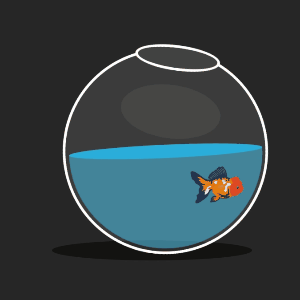
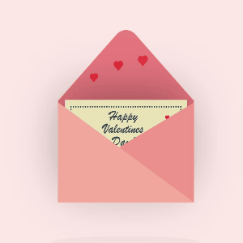

Projects
Here are some of my projects that I have worked on. Click the links to view the live projects.
Projects 1: To-Do List
This is a simple To-Do List application that allows users to add, remove, and check off tasks. It uses HTML, CSS, and JavaScript to create an interactive user experience.

Projects 2: Fish Bowl
A pet fish that will never die. Pet Fish in fish bowl with moving fish bowl.
Projects 3: Valentines-Day-Card
Valentines Day Card. Press/hover over the middle of the card to display a valentines day card.
